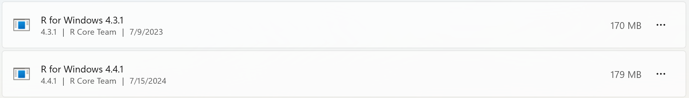
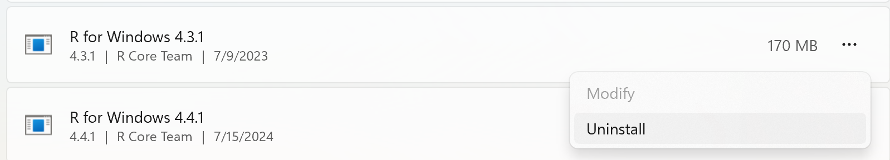

R version 4.5.2 (2025-10-31 ucrt) -- "[Not] Part in a Rumble"
Copyright (C) 2025 The R Foundation for Statistical Computing
Platform: x86_64-w64-mingw32/x64` Week 1: R & RStudio
For the first portion of this week’s preparation work, we are going to learn about / refresh our memory on R and RStudio. This course is all about you learning skills for working with data in R, so you will need to have local installations of both R and RStudio on your computer.
WarningCannot Install R or RStudio
If for any reason you cannot download R or RStudio onto your laptop, please let me know as soon as possible so we can figure something out.
📖 Readings: 45 minutes
📽 Watch Video: 30 min
💻 Activities: 5-10 min
✅ Check-ins: 1
1 Step 1: Installing R
As mentioned above, you will need to have local installations of both R (the software) and RStudio (the interface for working in R). Do not skip this step if you already have both R and RStudio installed on your computer, as you need to ensure you are using the most up to date version of R and RStudio.
1.1 Updating Your Version of R
If you already have R downloaded, you need to confirm that you have the most up to date version of R. Do not ignore these instructions. If you neglect to update your version of R, you may find that updating a package will make it so your code will not run.
- Step 1: Open RStudio
- Step 2: At the top of the the Console it will say what version of R you are using
If the version is not 4.5.2, you need to update your version of R! The simplest way to do this is to follow the instructions below to install R.
1.2 Installing R
Download and install R by going to https://cloud.r-project.org/. Here, you will find three options for installing R—click on the option for your computer’s operating system.
If you are a Windows user:
Click on “Download R for Windows”
Click on “base”
Click on the Download link.
When you open the execution file (
.exe) you will be prompted with a variety of questions about installing R. Feel free to use the default features / settings that come with R (continue to click “Ok” until the download starts).
WarningMultiple Versions of R
Beware that if you had a previous version of R downloaded on your PC, that old version will not be deleted when you download the most recent version of R. We do not want to have two versions of R installed, as your computer can get confused what version of R to use. So, you need to remove the old version of R.
To do this you need to:
- Navigate to your computer’s settings
- Click on the “Apps” option on the left-hand panel
- Search for or scroll down to R
- Find the older version of R

- Click on the
...on the right side - Select “Uninstall”

If you are macOS user:
Click on “Download R for (Mac) OS X”
Under “Latest release:” click on R-X.X.X.pkg, where R-X.X.X is the version number. For example, the latest version of R as of July 1, 2024 was R-4.4.1 (Race for Your Life).
When installing, use the default features / settings that come with R (click Ok until the download starts).
TipTroubleshooting for Macs
First, identify which version of OSx you are running. How-to
Next, find out which version of R your computer can run. Link
If this version is 3.6 or later, download the latest version that your computer can handle.
If this version is 3.4 or earlier, you’re going to run in to some trouble. I recommend updating your version of OSx, if you are willing. If you can’t, then you can use Posit Cloud to run R and RStudio on a free server. However, I recommend strongly against this option; your files will not be saved indefinitely, you will have limited hours to complete your work, your computing power will be limited, and you will need an internet connection at all times to do your work.
If you are a Linux user:
Click on “Download R for Linux” and choose your distribution for more information on installing R for your setup.
2 Step 2: Install RStudio
RStudio is an Integrated Development Environment (IDE) for R. What does that mean? Well, if you think of R as a language, which it is, you can think of RStudio as a program that helps you write and work in the language. Back in the dark ages, people wrote programs in text editors and then used the command line to compile those programs and run them. RStudio makes programming in R much easier and this course requires you to use it!
2.1 Updating Your Version of RStudio
If you already have RStudio, you need to double check if you have the most recent version. You will not have access to the newest features for Quarto documents unless you have the most recent version of RStudio.
- Step 1: Open RStudio
- Step 2: Click on “Help” in the upper menu
- Step 3: Click on “Check for Updates”
If there are no updates to RStudio since you installed it, you are good to go! If you need to update RStudio, you will be sent to Posit (the parent company) to download the most recent version of RStudio desktop.
2.2 Installing RStudio
Downloading the most recent version of RStudio works the same way regardless of whether you’ve never downloaded RStudio before or if you just need to update your version of RStudio.
When you navigate to the RStudio download page (https://rstudio.com/products/rstudio/download/), the website should automatically detect your computer’s operating system. So, you should be able to simply click the blue “Download RStudio Desktop for [insert operating system here]” button.
Clicking the button will begin installing RStudio. Once the download has completed, you will need to open the application file (on a Mac this is a .dmg file, on Windows this is an exe file).
3 Let’s start working in R! 🥳

4 Introduction to R
R is a statistical programming language. Unlike more general-purpose languages, R is optimized for working with data and doing statistics. R was created by Ross Ihaka and Robert Gentleman in 1993 (hence “R”) and was formally released by the R Core Group in 1997 (a group of 20-ish volunteers who are the only people who can change the base, built-in functionality of R). If you want to build an independent, standalone graphical interface, or run a web server, R is probably not the ideal language to use (you might want C / Python or PHP / Python, respectively). If you want to vacuum up a bunch of data, fit several regression models, and then compare the models, R is a great option and will be faster than working in a more general-purpose language like C or base Python.
In general, R is…
- vector-based
- 1 indexed (start counting 1, 2, 3, …)
- a scripting language (R code does not have to be compiled before it is run)
One thing to know about R is that it is open-source. This means that no company owns R (like there is for SAS or Matlab) and that developers cannot charge for the use of their R software. This does not mean that all of your code needs to be public (you can keep your code private), but it is important to be a good open-source citizen by sharing your code publicly when possible (later we will learn about GitHub), contributing to public projects and packages, creating your own packages, and using R for ethical and respectful projects.
📖 Required Reading: Basics of R
NoteThe History of
R
If you would like to learn more about the history of R, here is an excellent article written by Roger Peng.
💻 Required Tutorial: R Programming Basics
NoteProgramming in R
This tutorial gives you an overview of the foundations that make up the R programming language, including:
- functions and their arguments
- accessing help files
- making code comments
- object types (e.g., vectors, lists, )
- data types (e.g., numeric, integer, double, character)
- R’s package system
4.1 Debugging R Code
📽️ Required Video: Debugging R Code
5 Introduction to RStudio
📖 Recommended Video: A tour of RStudio
- Click Here to download a “cheatsheet” (easy reference page) for navigating the RStudio IDE.
Exploring the Panes
Includes the text editor. This is where you’ll do most of your work.

The logo on the script file indicates the file type. When an R file is open, there are Run and Source buttons on the top which allow you to run selected lines of code (Run) or source (run) the entire file. Code line numbers are provided on the left (this is a handy way to see where in the code the errors occur), and you can see line:character numbers at the bottom left. At the bottom right, there is another indicator of what type of file Rstudio thinks this is.
In the top right, you’ll find the environment, history, and connections tabs. The environment tab shows you the objects available in R (variables, data files, etc.), the history tab shows you what code you’ve run recently, and the connections tab is useful for setting up database connections.
On the bottom left is the console. There are also other tabs to give you a terminal (command line) prompt, and a jobs tab to monitor progress of long-running jobs. In this class we’ll primarily use the console tab.

On the bottom right, there are a set of tabs:
- files (to give you an idea of where you are working, and what files are present),

plots (which will be self-explanatory),
packages (which extensions to R are installed and loaded),

- the help tab (where documentation will show up), and

- the viewer window, which is used for interactive graphics or previewing HTML documents.
6 Installing Packages
📽️ Required Video: Installing R Packages (4 minutes)
Install / Update the tidyverse
Now that you have the hang of working in RStudio, let’s install / update the packages we will use in the course. In this course, we will make heavy use of the tidyverse suite of packages.
If you have not used the tidyverse before, type the following into your console or use the drop down menu in the Packages tab (as seen in the video above):
install.packages("tidyverse")If you have used the tidyverse before, you only need to update packages.
Type the following into your console:
library(tidyverse)
tidyverse_update()Then follow the instructions that print out to update a few of your tidyverse packages.
7 ✅ Check-in: Introduction to R & RStudio
Question 1: What does it mean for R to be “open-source”?
Question 2: How often do you need to install a package on your computer?
Question 3: What is the tidyverse?
Question 4: New objects in R are created using which symbol(s)?
Question 5: A code comment in R is declared using what symbol?
Question 6: Which of the following object names is an example of “snake case”?